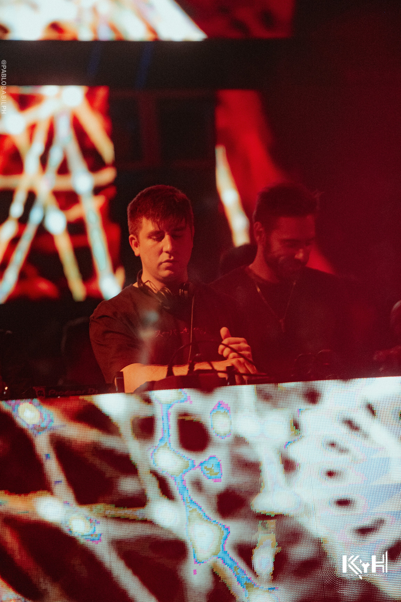

"La música ha sido compañera del ser humano desde los comienzos de su historia"
“La verdadera belleza de la música es que conecta gente. Lleva un mensaje y nosotros, los músicos,
somos los mensajeros."
"la música expresa miedos, alegrías, sentimientos muy profundos"
"La música nos identifica como seres, como grupos y como cultura"
"la música es tan importante para el ser humano porque conecta con su faceta espiritual."
"La música se interpreta con instrumentos y se escucha con los oídos, pero va mucho más allá de
ondas sonoras."
Generos
- Rominimal
- Micro house
- Tech house
- Deep house
Set ups
- Decks pioneer 2000ns2
- Mixer pioneer djm 900ns2
- Mixer allen & heath xone 96